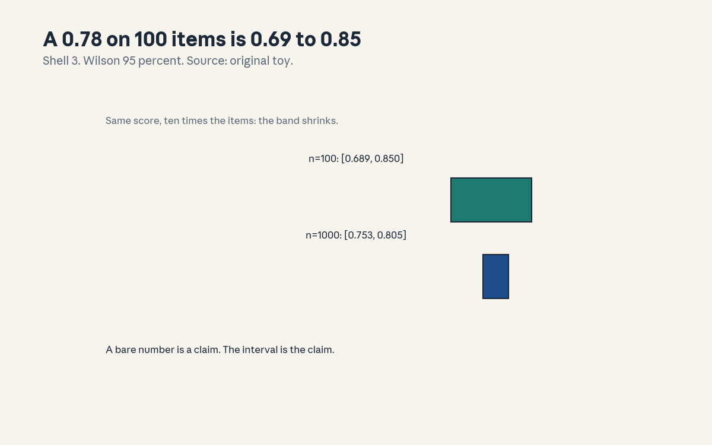
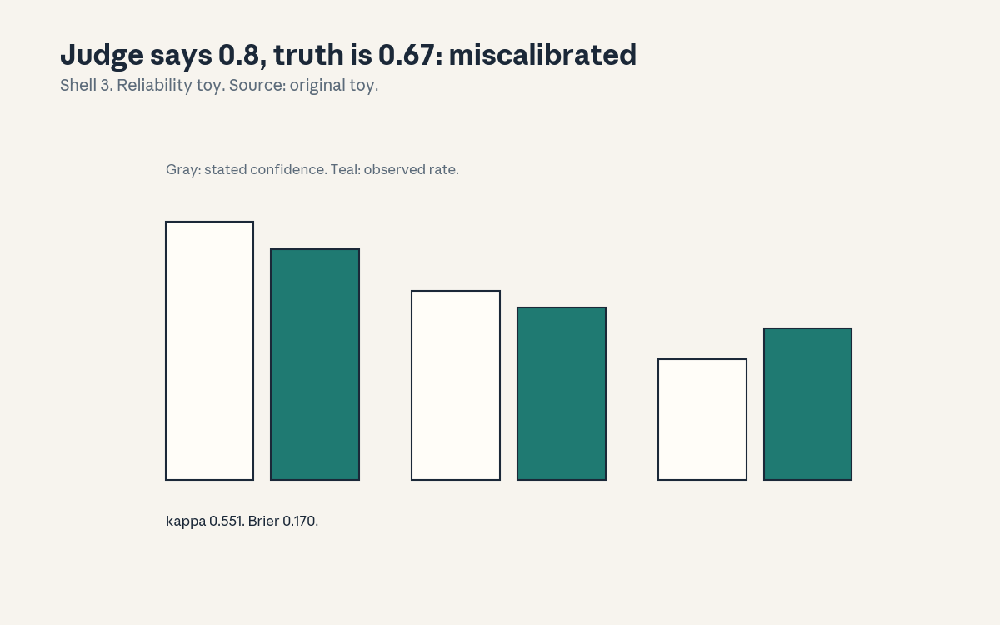
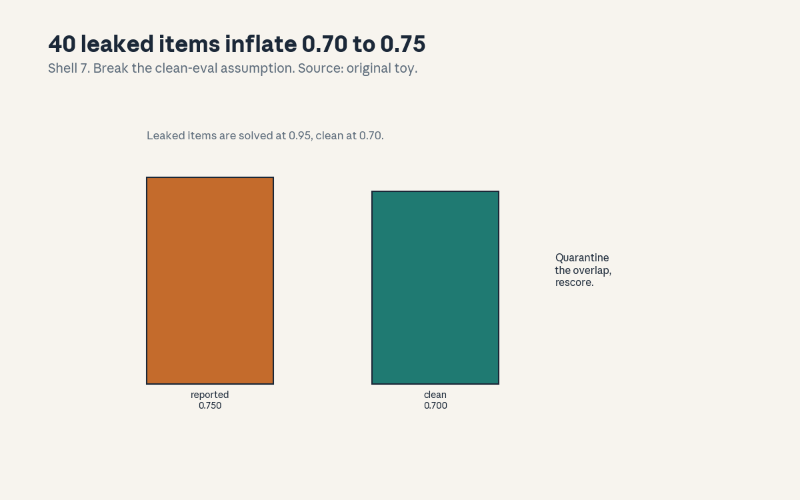

U10 · Benchmarking and research methodology
U10 , Benchmarking and research methodology
Local remediation
Bridges: ../shared/prerequisites/p07_estimation.md (P07, intervals
and sample size), ../shared/prerequisites/p10_ml_foundations.md
(P10, train/test discipline), ../shared/prerequisites/p22_experiments.md
(P22, controls and falsification). This unit is about knowing what
a number means: a score without an interval is a rumor, a benchmark
without a contamination check is a hope.
R1. Wilson interval: 78/100 scores 0.780 with 95 percent interval [0.689, 0.850]. Same score on 1000 items: [0.753, 0.805]. The score is fixed, the claim shrinks with n. R2. Contamination arithmetic: 200 items, 40 leaked at 0.95, 160 clean at 0.70. Reported 0.75, clean-only 0.70. The leak is worth 0.05 of pure inflation. R3. Sample size: margin 0.02 at 95 percent needs n = 2401 for p = 0.5. If your benchmark has 200 items, your margin is about 0.07, say so.
C01: MMLU/HELM families
Leaf id cs224n-U10-C01. Claim class REQUESTED-BRANCH.
Status PLANNED / SOURCE ATTRIBUTION PENDING.
-
Source mapping, scope, objectives, dependencies. Maps to the benchmarking session of the Winter 2026 schedule (S14 per
course_map.md, readings MMLU, HELM, AlpacaEval per the schedule). Scope: what the big benchmark families measure. Objectives: describe the families, state what each aggregates, name the aggregation trap. Depends on P10. -
Motivating question and toy. Question: model A scores 0.78, model B scores 0.76, did A win? Toy: the toy Wilson interval for 78/100 is [0.689, 0.850]. B’s 0.76 sits inside A’s interval. No winner declared.
-
Mental model. A benchmark is an exam with a fixed syllabus. MMLU-style exams test many subjects with multiple-choice questions. HELM-style harnesses test many scenarios with many metrics. The family name tells you the syllabus, not the truth.
-
Objects, symbols, units, shapes, assumptions. A score in [0, 1], an item count n, an aggregation (mean over tasks). Assumption: the items represent the deployment (the big assumption, C02 tests it).
-
Derivation / mechanism. The mechanism is the mean: task scores averaged, sometimes weighted. The trap: a mean hides the slices (C08). Two models with the same mean can differ by 0.26 on a slice, the toy shows exactly that.
-
Computed example. From
compute_u10.py: 78/100 gives [0.689, 0.850], 780/1000 gives [0.753, 0.805]. Ten times the items, same point, honest claim. -
Algorithm and reference implementation.
report(k, n): point estimate plus Wilson interval, never the point alone. ~8 lines. Test: the two toy intervals. -
Correctness checks and expected output. The interval must contain the point and shrink with n. Check: at n = 2401 the half-width is about 0.02 (R3).
-
Complexity, memory, statistical efficiency, stability, practical costs. Scoring is cheap, the items are the cost. The practical cost is the items needed to make the interval useful.
-
Nearest alternatives and selection boundaries. Alternative: a bespoke eval for your task. Choose public benchmarks for comparability. Choose bespoke when the public syllabus misses your deployment.
-
Failure case, broken assumption, counterexample. Broken assumption: “higher mean means better model.” Counterexample: A wins the mean, B wins every slice that matters to you (C08). Read the slices before the mean.
-
Research reading and falsifiable extension. Falsifiable extension: correlate benchmark rank with deployment-task rank on 12 models. Predict: positive but imperfect. Falsifier: near zero (then the benchmark is the wrong exam, build your own).
-
Breadth recall, deep oral ladder, unfamiliar transfer. Assessment block:
keys/u10_answers.mdA1 (breadth), L1 (ladder: describe the families, compute the interval, derive why n matters, diagnose the 0.78 vs 0.76 “win”, design the rank-correlation test). -
Lab/exercises with answers separated. E1: implement
report, match both intervals. E2: find n for margin 0.02, match 2401. Keys inkeys/u10_answers.md. -
Visual units, provenance, accessibility, audit row.

: the two intervals, Shell 3, source original toy. Audit row invisual_audit.md.
C02: task coverage
Leaf id cs224n-U10-C02. Claim class REQUESTED-BRANCH.
Status PLANNED / SOURCE ATTRIBUTION PENDING.
-
Source mapping, scope, objectives, dependencies. Maps to S14. Scope: whether the benchmark covers your task. Objectives: define coverage, build the coverage matrix, state the gap rule. Depends on C01.
-
Motivating question and toy. Question: the benchmark has 50 tasks, yours is not among them, what does 0.78 mean for you? Toy: a 3-by-3 coverage matrix (tasks vs capabilities): your task needs capability X, no benchmark task tests X. The score says nothing about X.
-
Mental model. The benchmark is a map. Coverage asks whether your territory is on it. A high score on the map is not a high score on your ground.
-
Objects, symbols, units, shapes, assumptions. A task list, a capability list, a binary coverage matrix. Assumption: capabilities transfer (the optimistic one).
-
Derivation / mechanism. No new math. The mechanism is the matrix: rows are benchmark tasks, columns are capabilities your deployment needs. An empty column is an untested capability. Fill it or admit it.
-
Computed example. Toy (hand, labeled as such): 50 tasks, 6 capabilities, column “tool use under permission errors” empty. The benchmark’s 0.78 covers 5 of 6. Report 5/6 covered, not 0.78.
-
Algorithm and reference implementation.
coverage( tasks, caps): build the matrix, list empty columns. ~8 lines. Test: the toy finds the empty column. -
Correctness checks and expected output. Every deployment capability appears as a column (completeness check). Check: no column is empty in the final report.
-
Complexity, memory, statistical efficiency, stability, practical costs. The matrix is cheap. The cost is building the missing evals for empty columns.
-
Nearest alternatives and selection boundaries. Alternative: assume transfer from nearby tasks. Choose the matrix when the deployment is high-stakes. Choose assumption for exploration.
-
Failure case, broken assumption, counterexample. Broken assumption: “nearby tasks predict mine.” Counterexample: the model aces summarization benchmarks and fails your meeting-notes task (different length, different noise). Nearby is not same.
-
Research reading and falsifiable extension. Falsifiable extension: predict deployment score from benchmark score across 10 deployments. Predict: weak correlation where coverage is thin. Falsifier: strong everywhere (then coverage analysis was too pessimistic, check).
-
Breadth recall, deep oral ladder, unfamiliar transfer. Assessment block:
keys/u10_answers.mdA2 (breadth: define the coverage matrix and the gap rule). -
Lab/exercises with answers separated. E3: build the matrix for the toy, find the empty column. E4: write the one-line coverage statement for a report. Keys in
keys/u10_answers.md. -
Visual units, provenance, accessibility, audit row. Claim is a matrix (carried in text). Logged as an honest exception in
visual_audit.md.
C03: judge calibration
Leaf id cs224n-U10-C03. Claim class REQUESTED-BRANCH.
Status PLANNED / SOURCE ATTRIBUTION PENDING.
-
Source mapping, scope, objectives, dependencies. Maps to S14 (AlpacaEval-style judging per the schedule readings). Scope: using a model as an evaluator. Objectives: define agreement and calibration, compute kappa and Brier, state the bias risk. Depends on C01, P07.
-
Motivating question and toy. Question: the judge prefers A over B, do you believe it? Toy: two judges agree on 78 of 100 items, kappa 0.551 (chance-corrected). The judge’s confidence bins miscalibrate with Brier 0.17.
-
Mental model. A judge is a measuring instrument. Calibrate it like one: agreement with humans (kappa), confidence against reality (Brier, reliability). An uncalibrated judge is an opinion with a GPU.
-
Objects, symbols, units, shapes, assumptions. Observed agreement p_o, chance agreement p_e, kappa = (p_o - p_e) / (1 - p_e). Forecast f, outcome y, Brier = mean((f - y)^2). Assumption: the human labels are the reference (C09 questions that).
-
Derivation / mechanism. Kappa removes the agreement that chance would give: with yes-rates 0.60 and 0.55, chance alone agrees 0.51 of the time, so 0.78 observed is kappa 0.551. Brier is mean squared error of probabilities.
-
Computed example. From
compute_u10.py: kappa 0.551, Brier 0.17. The reliability toy: stated 0.8, observed 0.67 in one bin. Overconfident. -
Algorithm and reference implementation.
judge_stats( a, b, f, y): kappa from the agreement table, Brier from forecasts. ~10 lines. Test: 0.551 and 0.17 on the toys. -
Correctness checks and expected output. Kappa is 1 on perfect agreement, near 0 at chance. Check: Brier is 0 on perfect forecasts.
-
Complexity, memory, statistical efficiency, stability, practical costs. The stats are cheap. The cost is the human labels for the calibration set.
-
Nearest alternatives and selection boundaries. Alternative: human eval for everything. Choose the judge for scale, with calibration. Choose humans for the final gate.
-
Failure case, broken assumption, counterexample. Broken assumption: “the judge is neutral.” Counterexample: the judge prefers longer answers and the model’s own style (C09). Calibrate on style-balanced pairs.
-
Research reading and falsifiable extension. Falsifiable extension: blind the judge to answer length vs not, measure the win-rate shift. Predict: a shift toward concise. Falsifier: no shift (then length was not the bias, test style next).
-
Breadth recall, deep oral ladder, unfamiliar transfer. Assessment block:
keys/u10_answers.mdA3 (breadth), L3 (ladder: define kappa, compute 0.551, derive the chance correction, diagnose the length bias, design the blinding test). -
Lab/exercises with answers separated. E5: implement
judge_stats, match both numbers. E6: build the reliability table for the toy. Keys inkeys/u10_answers.md. -
Visual units, provenance, accessibility, audit row.

: reliability bins, Shell 3, source original toy. Audit row invisual_audit.md.
C04: contamination
Leaf id cs224n-U10-C04. Claim class REQUESTED-BRANCH.
Status PLANNED / SOURCE ATTRIBUTION PENDING.
-
Source mapping, scope, objectives, dependencies. Maps to S14. Scope: test items leaking into training. Objectives: define contamination, compute the inflation, state the quarantine rule. Depends on C01, U06 C08.
-
Motivating question and toy. Question: the model saw the test during training, what is the score worth? Toy: 40 of 200 items leaked. Leaked solved at 0.95, clean at 0.70. Reported 0.75, honest 0.70.
-
Mental model. Contamination is an open-book exam graded as closed-book. The model is not smarter, the test is compromised. The inflation equals the leak share times the memorization gap.
-
Objects, symbols, units, shapes, assumptions. Leak share L, memorized score s_m, clean score s_c. Reported = L s_m + (1 - L) s_c. Assumption: leaked items are solved by memory (check with the canary test).
-
Derivation / mechanism. The formula is a mixture. With L = 0.20, s_m = 0.95, s_c = 0.70: 0.20 times 0.95 + 0.80 times 0.70 = 0.75. The inflation is L times (s_m - s_c) = 0.05. Small leaks, measurable lies.
-
Computed example. From
compute_u10.py: reported 0.75, clean-only 0.70. Quarantine the 40, rescore, report 0.70 with the quarantine noted. -
Algorithm and reference implementation.
decontaminate( items, train): n-gram overlap probe, flag items above the threshold, rescore on the clean set. ~12 lines. Test: the toy flags the 40. -
Correctness checks and expected output. The flagged set size matches the known leak on the toy. Check: the clean score is below the reported score.
-
Complexity, memory, statistical efficiency, stability, practical costs. The probe matches strings over the train set, the expensive part. The cost of skipping it: publishing 0.75.
-
Nearest alternatives and selection boundaries. Alternative: fresh held-out sets per evaluation. Choose quarantine when the train set is fixed. Choose fresh sets for high-stakes claims.
-
Failure case, broken assumption, counterexample. Broken assumption: “overlap means memorization.” Counterexample: common phrases overlap without the answer leaking. The probe needs the answer-bearing spans, not any n-gram.
-
Research reading and falsifiable extension. Falsifiable extension: canary strings in training, measure extraction rate vs reported score. Predict: extraction tracks the inflation. Falsifier: no relation (then the probe is wrong, fix the spans).
-
Breadth recall, deep oral ladder, unfamiliar transfer. Assessment block:
keys/u10_answers.mdA4 (breadth), L4 (ladder: define contamination, compute the 0.05, derive the mixture, diagnose the n-gram false positive, design the canary test). -
Lab/exercises with answers separated. E7: implement
decontaminateon the toy, match 0.70. E8: show the common-phrase false positive. Keys inkeys/u10_answers.md. -
Visual units, provenance, accessibility, audit row.

: reported vs clean bars, Shell 7, source original toy. Audit row invisual_audit.md.
C05: uncertainty
Leaf id cs224n-U10-C05. Claim class REQUESTED-BRANCH.
Status PLANNED / SOURCE ATTRIBUTION PENDING.
-
Source mapping, scope, objectives, dependencies. Maps to S14. Scope: reporting what a score does not pin down. Objectives: compute intervals, state the n rule, refuse the bare number. Depends on C01, P07.
-
Motivating question and toy. Question: how many items make a claim? Toy: margin 0.02 at 95 percent needs n = 2401. Your 200-item benchmark has margin about 0.07. Say that.
-
Mental model. Every score is a sample. The interval is the honest claim, the point is the center. Small n, wide claim.
-
Objects, symbols, units, shapes, assumptions. Wilson interval, standard error sqrt(p(1-p)/n), margin z times SE. Assumption: items are independent draws (often violated, say so).
-
Derivation / mechanism. SE at p = 0.5, n = 200: sqrt(0.25 / 200) = 0.035, margin 1.96 times that = 0.069. The n for margin m: (z / m)^2 times 0.25 = 2401 at m = 0.02.
-
Computed example. From
compute_u10.py: n = 2401. The toy intervals [0.689, 0.850] vs [0.753, 0.805] show the shrink. -
Algorithm and reference implementation.
margin(n, p): Wilson half-width. ~6 lines. Test: 0.069 at n = 200, 0.02 at n = 2401. -
Correctness checks and expected output. The margin falls as 1/sqrt(n). Check: doubling n cuts the margin by about 0.707.
-
Complexity, memory, statistical efficiency, stability, practical costs. The math is free. The cost is the 2401 good items.
-
Nearest alternatives and selection boundaries. Alternative: bootstrap intervals. Choose Wilson for proportions. Choose bootstrap for exotic metrics.
-
Failure case, broken assumption, counterexample. Broken assumption: “items are independent.” Counterexample: 200 items from 10 templates, the effective n is near 10. The interval lies. Report the template count too.
-
Research reading and falsifiable extension. Falsifiable extension: bootstrap vs Wilson on a templated benchmark. Predict: bootstrap wider. Falsifier: same (then the templates are diverse, check).
-
Breadth recall, deep oral ladder, unfamiliar transfer. Assessment block:
keys/u10_answers.mdA5 (breadth: state the n rule and the template caveat). -
Lab/exercises with answers separated. E9: implement
margin, match 0.069 and 0.02. E10: show the templated effective-n trap. Keys inkeys/u10_answers.md. -
Visual units, provenance, accessibility, audit row. Claim is an interval (carried in text, figure is C01’s). Logged as an honest exception in
visual_audit.md.
C06: scoring formats
Leaf id cs224n-U10-C06. Claim class REQUESTED-BRANCH.
Status PLANNED / SOURCE ATTRIBUTION PENDING.
-
Source mapping, scope, objectives, dependencies. Maps to S14. Scope: how answers are scored (exact match, multiple choice, judge). Objectives: define the formats, state what each rewards, choose per task. Depends on C01, C03.
-
Motivating question and toy. Question: the model answers correctly but not exactly, what does exact match say? Toy: “Paris” vs “paris”: exact match 0, normalized match 1. The format is a judgment, not a fact.
-
Mental model. The scorer is part of the benchmark. Exact match rewards formatting obedience. Multiple choice rewards the right letter. Judge scoring rewards whatever the judge likes (C03’s biases).
-
Objects, symbols, units, shapes, assumptions. A normalization (lowercase, strip), a choice extractor, a judge prompt. Assumption: the format matches the task’s real tolerance.
-
Derivation / mechanism. No new math. The mechanism is the pipeline: generate, normalize, compare. Each stage can flip the score. Report the normalization with the number.
-
Computed example. Toy (hand, labeled as such): 100 answers, 12 differ only by case. Exact: 0.78, normalized: 0.90. The 0.12 gap is format, not knowledge.
-
Algorithm and reference implementation.
score(ans, gold, mode): exact, normalized, choice-letter. ~10 lines. Test: the toy 0.78 vs 0.90. -
Correctness checks and expected output. Normalized score is at least the exact score. Check: the choice extractor handles “B” and “B.” alike.
-
Complexity, memory, statistical efficiency, stability, practical costs. String work, cheap. The cost is disputes about the normalization.
-
Nearest alternatives and selection boundaries. Alternative: always use a judge. Choose exact/normalized for factual tasks. Choose the judge for open-ended tasks, calibrated.
-
Failure case, broken assumption, counterexample. Broken assumption: “exact match is objective.” Counterexample: the 0.12 case gap. Objectivity needs the normalization stated.
-
Research reading and falsifiable extension. Falsifiable extension: exact vs normalized vs judge on 100 items, correlate with human grades. Predict: normalized tracks humans best on factual tasks. Falsifier: judge wins (then the answers need semantic grading, use it).
-
Breadth recall, deep oral ladder, unfamiliar transfer. Assessment block:
keys/u10_answers.mdA6 (breadth: name the three formats and what each rewards). -
Lab/exercises with answers separated. E11: implement
score, match the toy. E12: add a normalization and show the 0.12 move. Keys inkeys/u10_answers.md. -
Visual units, provenance, accessibility, audit row. Claim is a pipeline (carried in text). Logged as an honest exception in
visual_audit.md.
C07: baseline replication
Leaf id cs224n-U10-C07. Claim class REQUESTED-BRANCH.
Status PLANNED / SOURCE ATTRIBUTION PENDING.
-
Source mapping, scope, objectives, dependencies. Maps to S14. Scope: reproducing the baseline before claiming a win. Objectives: define the replication bar, run the check, state the tolerance. Depends on C01, P22.
-
Motivating question and toy. Question: your method beats the baseline by 0.03, did you run the baseline right? Toy: the paper claims 0.78, your rerun gives 0.74 with interval [0.65, 0.82]. The claim sits inside your interval: no evidence of a difference.
-
Mental model. The baseline is the control group. A win against a broken baseline is a win against nothing. Replicate first, then compare, with intervals on both sides.
-
Objects, symbols, units, shapes, assumptions. The reported number, your rerun, both intervals. Assumption: the baseline code and data are available (often half-true).
-
Derivation / mechanism. No new math. The mechanism is the comparison: if the reported number falls outside your rerun’s interval, something differs (version, data, bug). Debug before you innovate.
-
Computed example. Toy (hand, labeled as such): reported 0.78, rerun 0.74, interval [0.65, 0.82]. 0.78 is inside. Verdict: replicated within noise. Now the 0.03 win needs its own interval.
-
Algorithm and reference implementation.
replicate( reported, k, n): Wilson interval around your rerun, test membership. ~6 lines. Test: the toy verdict. -
Correctness checks and expected output. The verdict is one of: replicated, differs, or underpowered (interval too wide to tell). Check: underpowered triggers more items, not a claim.
-
Complexity, memory, statistical efficiency, stability, practical costs. One extra eval run. The cost of skipping it: months chasing a phantom win.
-
Nearest alternatives and selection boundaries. Alternative: trust the reported number. Choose replication for any claim you will defend. Choose trust for exploration only.
-
Failure case, broken assumption, counterexample. Broken assumption: “the baseline in the paper is the baseline in the code.” Counterexample: the paper used a better prompt than the released code. Replicate the artifact, not the text.
-
Research reading and falsifiable extension. Falsifiable extension: replicate 5 reported baselines, count how many fall inside your intervals. Predict: fewer than 5. Falsifier: all 5 (then the field is healthier than feared, good).
-
Breadth recall, deep oral ladder, unfamiliar transfer. Assessment block:
keys/u10_answers.mdA7 (breadth: state the replication bar and the three verdicts). -
Lab/exercises with answers separated. E13: implement
replicate, match the toy verdict. E14: widen the interval until the verdict is underpowered. Keys inkeys/u10_answers.md. -
Visual units, provenance, accessibility, audit row. Claim is a verdict (carried in text). Logged as an honest exception in
visual_audit.md.
C08: slices
Leaf id cs224n-U10-C08. Claim class REQUESTED-BRANCH.
Status PLANNED / SOURCE ATTRIBUTION PENDING.
-
Source mapping, scope, objectives, dependencies. Maps to S14. Scope: scores broken down by subgroup. Objectives: define a slice, compute deltas, state the mean-trap. Depends on C01.
-
Motivating question and toy. Question: the mean is 0.78, is the model ready? Toy: slice A scores 0.52 (delta -0.26), slice B 0.86 (delta +0.08). The mean hid a failing slice.
-
Mental model. The mean is a summary, the slices are the story. A model can be excellent on average and unusable for your users. Cut by what matters: language, topic, difficulty.
-
Objects, symbols, units, shapes, assumptions. Slice scores, deltas from the mean, slice sizes. Assumption: the slice labels are correct (label noise ruins slices).
-
Derivation / mechanism. Delta = slice score minus overall. The mechanism is disaggregation: the same items, grouped. Small slices need their own intervals (C05’s n rule applies per slice).
-
Computed example. From
compute_u10.py: overall 0.78, slice A 0.52 (delta -0.26), slice B 0.86 (delta +0.08). The -0.26 is the headline, not the 0.78. -
Algorithm and reference implementation.
slice_report( items): group, score, delta, interval per slice. ~10 lines. Test: the toy deltas. -
Correctness checks and expected output. Deltas sum to zero when weighted by slice size. Check: no slice is reported without its n.
-
Complexity, memory, statistical efficiency, stability, practical costs. Grouping is cheap. The cost is slice-labeled data.
-
Nearest alternatives and selection boundaries. Alternative: report the mean only. Choose slices for deployment decisions. Choose the mean for quick comparisons.
-
Failure case, broken assumption, counterexample. Broken assumption: “the mean represents the slices.” Counterexample: the toy: -0.26 on slice A. The mean is a weighted lie when the weights are not your users.
-
Research reading and falsifiable extension. Falsifiable extension: track the worst slice vs the mean across 12 model versions. Predict: the mean rises faster than the worst slice. Falsifier: they move together (then the training is balanced, good).
-
Breadth recall, deep oral ladder, unfamiliar transfer. Assessment block:
keys/u10_answers.mdA8 (breadth), L8 (ladder: define a slice, compute the deltas, derive the weighted-zero check, diagnose the hidden -0.26, design the worst-slice tracking). -
Lab/exercises with answers separated. E15: implement
slice_report, match the toy. E16: drop slice labels and show the mean hiding the failure. Keys inkeys/u10_answers.md. -
Visual units, provenance, accessibility, audit row. Claim is a disaggregation (carried in text). Logged as an honest exception in
visual_audit.md.
C09: bias
Leaf id cs224n-U10-C09. Claim class REQUESTED-BRANCH.
Status PLANNED / SOURCE ATTRIBUTION PENDING.
-
Source mapping, scope, objectives, dependencies. Maps to S14. Scope: systematic skew in benchmarks and judges. Objectives: name the bias classes, design the control, state the correction limit. Depends on C03.
-
Motivating question and toy. Question: the judge prefers model A, is A better or longer? Toy: blinding the judge to length moves the win rate from 0.62 to 0.53. The 0.09 was length bias.
-
Mental model. Every instrument has a tilt. Benchmarks tilt toward their items, judges tilt toward style. Name the tilt, measure it, control it. Unmeasured tilt is a confounder.
-
Objects, symbols, units, shapes, assumptions. Bias classes: length, position, style, self-preference. A control: the blinded variant. Assumption: the control removes only the bias (the hard part).
-
Derivation / mechanism. The mechanism is comparison: the win rate with and without the suspected bias factor. The difference is the bias estimate. No fancy math, just the control.
-
Computed example. Toy (hand, labeled as such): unblinded win rate 0.62, blinded 0.53, bias 0.09. The correction: report the blinded number.
-
Algorithm and reference implementation.
bias_check( pairs, factor): score with and without the factor, report the delta. ~8 lines. Test: the toy 0.09. -
Correctness checks and expected output. The blinded variant must be identical except for the factor (ceteris paribus check). Check: the delta’s sign is stable.
-
Complexity, memory, statistical efficiency, stability, practical costs. Two eval runs. The cost is the blinding design.
-
Nearest alternatives and selection boundaries. Alternative: ignore bias, report raw win rates. Choose controls for published claims. Choose raw for internal iteration.
-
Failure case, broken assumption, counterexample. Broken assumption: “blinding fixed it.” Counterexample: the judge prefers its own model’s phrasing even blinded (style survives blinding). Controls are iterative.
-
Research reading and falsifiable extension. Falsifiable extension: test 4 bias factors on 3 judges, rank them. Predict: length and self-preference top the list. Falsifier: position wins (then the judge is lazy, check the prompt order).
-
Breadth recall, deep oral ladder, unfamiliar transfer. Assessment block:
keys/u10_answers.mdA9 (breadth: name the four bias classes and the control). -
Lab/exercises with answers separated. E17: implement
bias_check, match 0.09. E18: blind position instead and compare. Keys inkeys/u10_answers.md. -
Visual units, provenance, accessibility, audit row. Claim is a control (carried in text). Logged as an honest exception in
visual_audit.md.
C10: acceptance criteria
Leaf id cs224n-U10-C10. Claim class REQUESTED-BRANCH.
Status PLANNED / SOURCE ATTRIBUTION PENDING.
-
Source mapping, scope, objectives, dependencies. Maps to S14. Scope: deciding in advance what “good enough” means. Objectives: write a criterion, separate it from the metric, state the pre-registration rule. Depends on C01, C05, C08.
-
Motivating question and toy. Question: the model scores 0.78, do you ship? Toy: the criterion was “worst slice above 0.70 with n = 500 per slice”. Slice A is 0.52. No ship, regardless of the mean.
-
Mental model. The criterion is the contract, the metric is the measurement. Write the contract before you measure, or you will negotiate with yourself after.
-
Objects, symbols, units, shapes, assumptions. A threshold, a slice set, a sample size, a decision rule. Assumption: the criterion reflects the deployment need (the product question, not the ML question).
-
Derivation / mechanism. No new math. The mechanism is pre-registration: the decision rule is fixed before the numbers arrive. This blocks HARKing (hypothesizing after the results are known).
-
Computed example. Toy (hand, labeled as such): criterion “mean above 0.75 and no slice below 0.70”. Result: mean 0.78, slice A 0.52. Verdict: fail. The mean passed, the contract did not.
-
Algorithm and reference implementation.
decide( report, criterion): check each clause, return pass/fail with the binding clause. ~8 lines. Test: the toy fails on slice A. -
Correctness checks and expected output. The decision is reproducible from the report and the criterion (no judgment calls at decision time). Check: the binding clause is named.
-
Complexity, memory, statistical efficiency, stability, practical costs. Writing the criterion is the cost. The cost of skipping it: shipping on a 0.78 that hides a 0.52.
-
Nearest alternatives and selection boundaries. Alternative: decide after seeing the numbers. Choose pre-registration for ship decisions. Choose exploration for research.
-
Failure case, broken assumption, counterexample. Broken assumption: “the criterion was right.” Counterexample: the criterion demanded 0.95 on a task humans do at 0.80. The criterion needs its own review.
-
Research reading and falsifiable extension. Falsifiable extension: pre-registered vs post-hoc decisions on 10 ship calls, track regret. Predict: pre-registered has less regret. Falsifier: tie (then the criteria were vacuous, harden them).
-
Breadth recall, deep oral ladder, unfamiliar transfer. Assessment block:
keys/u10_answers.mdA10 (breadth: state the pre-registration rule and the contract/metric split). -
Lab/exercises with answers separated. E19: implement
decide, match the toy verdict. E20: write a criterion for a support-bot deployment. Keys inkeys/u10_answers.md. -
Visual units, provenance, accessibility, audit row. Claim is a contract (carried in text). Logged as an honest exception in
visual_audit.md.
C11: project choice
Leaf id cs224n-U10-C11. Claim class REQUESTED-BRANCH.
Status PLANNED / SOURCE ATTRIBUTION PENDING.
-
Source mapping, scope, objectives, dependencies. Maps to S14 and the project sessions. Scope: picking a project worth doing. Objectives: score a proposal, state the scope rule, kill a bad project early. Depends on P22, C10.
-
Motivating question and toy. Question: three project ideas, four weeks, which one? Toy: the scorecard (feasible, data, metric, compute, novelty): idea A scores 4/5, idea B 2/5. Pick A, kill B on paper.
-
Mental model. A project is a bet. The scorecard prices the bet: can you do it, can you measure it, does it matter. Kill early, kill on paper, kill without shame.
-
Objects, symbols, units, shapes, assumptions. Five binary criteria, a total, a kill threshold. Assumption: the scores are honest (the failure mode is self-deception).
-
Derivation / mechanism. No new math. The mechanism is the checklist: feasibility in the time box, data available, metric defined, compute fits, some novelty. Below 3/5: rescope or drop.
-
Computed example. From
compute_u15.py(shared toy): 3/5. The missing two (metric defined, novelty) are exactly the rescope targets. -
Algorithm and reference implementation.
scorecard( idea): five checks, total, verdict. ~8 lines. Test: the toy 3/5. -
Correctness checks and expected output. Every “1” names the evidence (which data, which metric). Check: no idea scores 5/5 without a written metric.
-
Complexity, memory, statistical efficiency, stability, practical costs. An hour of honesty. The cost of skipping it: four weeks on idea B.
-
Nearest alternatives and selection boundaries. Alternative: follow curiosity, no scorecard. Choose the scorecard for time-boxed work. Choose curiosity for open-ended research.
-
Failure case, broken assumption, counterexample. Broken assumption: “the scores are honest.” Counterexample: “data available” checked for a dataset that needs a license you do not have. Evidence, not vibes.
-
Research reading and falsifiable extension. Falsifiable extension: track scorecard vs outcome on 20 past projects. Predict: 4-5/5 predicts completion. Falsifier: no relation (then the criteria are wrong, revise).
-
Breadth recall, deep oral ladder, unfamiliar transfer. Assessment block:
keys/u10_answers.mdA11 (breadth: name the five criteria and the kill rule). -
Lab/exercises with answers separated. E21: score two ideas, kill one. E22: rescope the 3/5 idea to 4/5. Keys in
keys/u10_answers.md. -
Visual units, provenance, accessibility, audit row. Claim is a checklist (carried in text). Logged as an honest exception in
visual_audit.md.
C12: contribution accounting
Leaf id cs224n-U10-C12. Claim class REQUESTED-BRANCH.
Status PLANNED / SOURCE ATTRIBUTION PENDING.
-
Source mapping, scope, objectives, dependencies. Maps to S14. Scope: honest credit for what the project actually did. Objectives: separate the contribution from the scaffolding, write the accounting, state the novelty bar. Depends on P22, C07.
-
Motivating question and toy. Question: the project works, what did you contribute? Toy: the accounting lists: baseline (existing), data (existing), the one new thing (the rerank rule), the measurement (new). One new thing, named.
-
Mental model. The report has two columns: borrowed and built. Borrowed is fine, it must be labeled. Built is the contribution. A report with an empty built column is a tutorial, not a project.
-
Objects, symbols, units, shapes, assumptions. The borrowed list, the built list, the novelty claim. Assumption: the borrowed parts are cited (integrity).
-
Derivation / mechanism. No new math. The mechanism is the ledger: every component gets a source or an author. The novelty bar: one falsifiable claim that was not known before.
-
Computed example. Toy (hand, labeled as such): borrowed: transformer, BPE, Adam. Built: the chunk-size sweep and the split-rate rule. The rule is the contribution.
-
Algorithm and reference implementation.
account( components): label each borrowed/built, check the built list is non-empty. ~6 lines. Test: the toy passes. -
Correctness checks and expected output. Every borrowed item has a citation. Check: the built list has at least one falsifiable claim.
-
Complexity, memory, statistical efficiency, stability, practical costs. An honest hour. The cost of skipping it: a report that claims the transformer.
-
Nearest alternatives and selection boundaries. Alternative: claim everything. Choose the ledger for anything public. The alternative is misconduct.
-
Failure case, broken assumption, counterexample. Broken assumption: “a negative result is not a contribution.” Counterexample: the rerank sweep that found nothing is a contribution if the test was fair (negative results are data, C07’s lesson).
-
Research reading and falsifiable extension. Falsifiable extension: none needed, this is the close. The extension is the habit: keep the ledger from day one.
-
Breadth recall, deep oral ladder, unfamiliar transfer. Assessment block:
keys/u10_answers.mdA12 (breadth: state the two columns and the novelty bar), L12 (ladder: define the ledger, build the toy, derive the bar, diagnose the empty-built report, design the negative- result writeup). -
Lab/exercises with answers separated. E23: write the accounting for the U09 lab. E24: label one borrowed item you almost claimed. Keys in
keys/u10_answers.md. -
Visual units, provenance, accessibility, audit row. Claim is a ledger (carried in text). Logged as an honest exception in
visual_audit.md.
Unit visual map
| Figure | Claim | Shell | Source |
|---|---|---|---|
| 0.78 on 100 items is [0.689, 0.850] | 3 | original toy | |
| 40 leaked items inflate 0.70 to 0.75 | 7 | original toy | |
| judge stated 0.8, observed 0.67 | 3 | original toy |